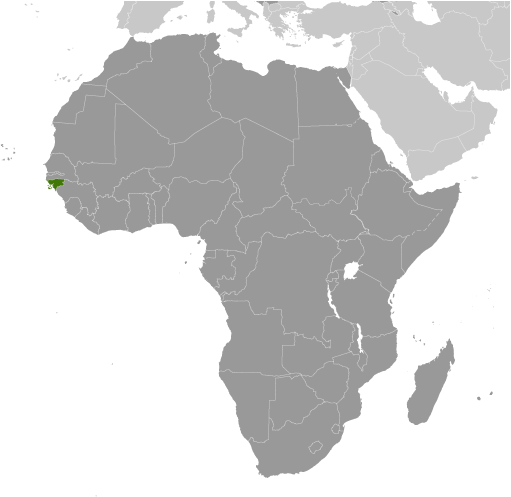
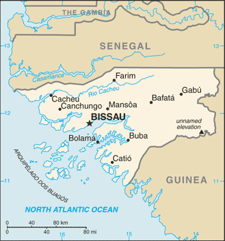
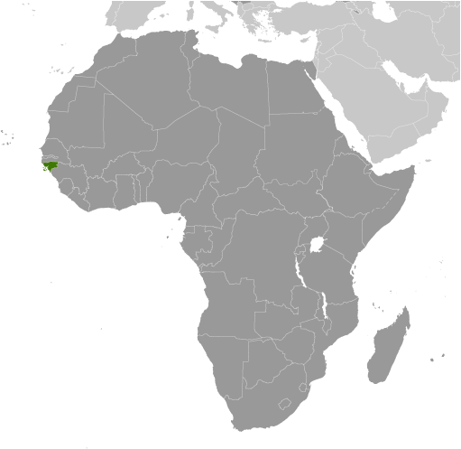
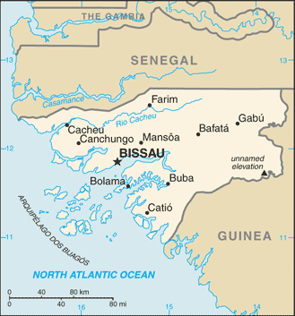

Africa :: GUINEA-BISSAU
Introduction :: GUINEA-BISSAU
-
Since independence from Portugal in 1974, Guinea-Bissau has experienced considerable political and military upheaval. In 1980, a military coup established authoritarian General Joao Bernardo 'Nino' VIEIRA as president. Despite eventually setting a path to a market economy and multiparty system, VIEIRA's regime was characterized by the suppression of political opposition and the purging of political rivals. Several coup attempts through the 1980s and early 1990s failed to unseat him. In 1994 VIEIRA was elected president in the country's first free, multiparty election. A military mutiny and resulting civil war in 1998 eventually led to VIEIRA's ouster in May 1999. In February 2000, a transitional government turned over power to opposition leader Kumba YALA after he was elected president in transparent polling. In September 2003, after only three years in office, YALA was overthrown in a bloodless military coup, and businessman Henrique ROSA was sworn in as interim president. In 2005, former President VIEIRA was reelected, pledging to pursue economic development and national reconciliation; he was assassinated in March 2009. Malam Bacai SANHA was elected in an emergency election held in June 2009, but he passed away in January 2012 from a long-term illness. A military coup in April 2012 prevented Guinea-Bissau's second-round presidential election - to determine SANHA's successor - from taking place. Following mediation by the Economic Community of Western African States, a civilian transitional government assumed power in 2012 and remained until Jose Mario VAZ won a free and fair election in 2014. A long-running dispute between factions in the ruling PAIGC party has brought the government to a political impasse; there have been five prime ministers since August 2015.
Geography :: GUINEA-BISSAU
-
Western Africa, bordering the North Atlantic Ocean, between Guinea and Senegal12 00 N, 15 00 WAfricatotal: 36,125 sq kmland: 28,120 sq kmwater: 8,005 sq kmcountry comparison to the world: 138slightly less than three times the size of Connecticuttotal: 762 kmborder countries (2): Guinea 421 km, Senegal 341 km350 kmterritorial sea: 12 nmexclusive economic zone: 200 nmtropical; generally hot and humid; monsoonal-type rainy season (June to November) with southwesterly winds; dry season (December to May) with northeasterly harmattan windsmostly low-lying coastal plain with a deeply indented estuarine coastline rising to savanna in east; numerous off-shore islands including the Arquipelago Dos Bijagos consisting of 18 main islands and many small isletsmean elevation: 70 melevation extremes: lowest point: Atlantic Ocean 0 mhighest point: unnamed elevation in the eastern part of the country 300 mfish, timber, phosphates, bauxite, clay, granite, limestone, unexploited deposits of petroleumagricultural land: 44.8%arable land 8.2%; permanent crops 6.9%; permanent pasture 29.7%forest: 55.2%other: 0% (2011 est.)250 sq km (2012)approximately one-fifth of the population lives in the capital city of Bissau along the Atlantic coast; the remainder is distributed among the eight other, mainly rural, regionshot, dry, dusty harmattan haze may reduce visibility during dry season; brush firesdeforestation; soil erosion; overgrazing; overfishingparty to: Biodiversity, Climate Change, Climate Change-Kyoto Protocol, Desertification, Endangered Species, Hazardous Wastes, Law of the Sea, Ozone Layer Protection, Wetlandssigned, but not ratified: none of the selected agreementsthis small country is swampy along its western coast and low-lying inland
People and Society :: GUINEA-BISSAU
-
1,792,338 (July 2017 est.)country comparison to the world: 152noun: Bissau-Guinean(s)adjective: Bissau-GuineanFulani 28.5%, Balanta 22.5%, Mandinga 14.7%, Papel 9.1%, Manjaco 8.3%, Beafada 3.5%, Mancanha 3.1%, Bijago 2.1%, Felupe 1.7%, Mansoanca 1.4%, Balanta Mane 1%, other 1.8%, none 2.2% (2008 est.)Crioulo (lingua franca), Portuguese (official; largely used as a second or third language), Pular (a Fula language), MandingoMuslim 45.1%, Christian 22.1%, animist 14.9%, none 2%, unspecified 15.9% (2008 est.)Guinea-Bissau’s young and growing population is sustained by high fertility; approximately 60% of the population is under the age of 25. Its large reproductive-age population and total fertility rate of more than 4 children per woman offsets the country’s high infant and maternal mortality rates. The latter is among the world’s highest because of the prevalence of early childbearing, a lack of birth spacing, the high percentage of births outside of health care facilities, and a shortage of medicines and supplies.Guinea-Bissau’s history of political instability, a civil war, and several coups (the latest in 2012) have resulted in a fragile state with a weak economy, high unemployment, rampant corruption, widespread poverty, and thriving drug and child trafficking. With the country lacking educational infrastructure, school funding and materials, and qualified teachers, and with the cultural emphasis placed on religious education, parents frequently send boys to study in residential Koranic schools (daaras) in Senegal and The Gambia. They often are extremely deprived and are forced into street begging or agricultural work by marabouts (Muslim religious teachers), who enrich themselves at the expense of the children. Boys who leave their marabouts often end up on the streets of Dakar or other large Senegalese towns and are vulnerable to even worse abuse.Some young men lacking in education and job prospects become involved in the flourishing international drug trade. Local drug use and associated violent crime are growing.0-14 years: 39.03% (male 349,256/female 350,327)15-24 years: 20.18% (male 179,389/female 182,242)25-54 years: 32.77% (male 292,736/female 294,526)55-64 years: 4.57% (male 32,156/female 49,761)65 years and over: 3.46% (male 22,574/female 39,371) (2017 est.)total dependency ratio: 80.4youth dependency ratio: 75.2elderly dependency ratio: 5.2potential support ratio: 19.3 (2015 est.)total: 20.1 yearsmale: 19.7 yearsfemale: 20.6 years (2017 est.)country comparison to the world: 1901.86% (2017 est.)country comparison to the world: 5132.5 births/1,000 population (2017 est.)country comparison to the world: 3013.9 deaths/1,000 population (2017 est.)country comparison to the world: 60 migrant(s)/1,000 population (2017 est.)country comparison to the world: 93approximately one-fifth of the population lives in the capital city of Bissau along the Atlantic coast; the remainder is distributed among the eight other, mainly rural, regionsurban population: 50.8% of total population (2017)rate of urbanization: 3.69% annual rate of change (2015-20 est.)BISSAU (capital) 492,000 (2015)at birth: 1.03 male(s)/female0-14 years: 1 male(s)/female15-24 years: 0.98 male(s)/female25-54 years: 0.99 male(s)/female55-64 years: 0.62 male(s)/female65 years and over: 0.6 male(s)/femaletotal population: 0.96 male(s)/female (2016 est.)549 deaths/100,000 live births (2015 est.)country comparison to the world: 18total: 85.7 deaths/1,000 live birthsmale: 95.1 deaths/1,000 live birthsfemale: 76 deaths/1,000 live births (2017 est.)country comparison to the world: 4total population: 51 yearsmale: 48.9 yearsfemale: 53.1 years (2017 est.)country comparison to the world: 2234.09 children born/woman (2017 est.)country comparison to the world: 3216% (2014)5.6% of GDP (2014)country comparison to the world: 1230.08 physicians/1,000 population (2009)1 beds/1,000 population (2009)improved:urban: 98.8% of populationrural: 60.3% of populationtotal: 79.3% of populationunimproved:urban: 1.2% of populationrural: 39.7% of populationtotal: 20.7% of population (2015 est.)improved:urban: 33.5% of populationrural: 8.5% of populationtotal: 20.8% of populationunimproved:urban: 66.5% of populationrural: 91.5% of populationtotal: 79.2% of population (2015 est.)3.1% (2016 est.)country comparison to the world: 2036,000 (2016 est.)country comparison to the world: 622,000 (2016 est.)country comparison to the world: 52degree of risk: very highfood or waterborne diseases: bacterial and protozoal diarrhea, hepatitis A, and typhoid fevervectorborne diseases: malaria, dengue fever, and yellow feverwater contact disease: schistosomiasisanimal contact disease: rabies (2016)9.5% (2016)country comparison to the world: 14417% (2014)country comparison to the world: 352.2% of GDP (2013)definition: age 15 and over can read and writetotal population: 59.9%male: 71.8%female: 48.3% (2015 est.)
Government :: GUINEA-BISSAU
-
conventional long form: Republic of Guinea-Bissauconventional short form: Guinea-Bissaulocal long form: Republica da Guine-Bissaulocal short form: Guine-Bissauformer: Portuguese Guineaetymology: the country is named after the Guinea region of West Africa that lies along the Gulf of Guinea and stretches north to the Sahel; "Bissau," the name of the capital city, distinguishes the country from neighboring Guineasemi-presidential republicname: Bissaugeographic coordinates: 11 51 N, 15 35 Wtime difference: UTC 0 (5 hours ahead of Washington, DC, during Standard Time)9 regions (regioes, singular - regiao); Bafata, Biombo, Bissau, Bolama/Bijagos, Cacheu, Gabu, Oio, Quinara, Tombali24 September 1973 (declared); 10 September 1974 (from Portugal)Independence Day, 24 September (1973)history: promulgated 16 May 1984; note - constitution suspended following military coup in April 2012 and restored in 2014amendments: proposed by the National People’s Assembly if supported by at least one-third of its members, by the Council of State (a presidential consultant body), or by the government; passage requires approval by at least two-thirds majority vote of the Assembly; constitutional articles on the republican and secular form of government and national sovereignty cannot be amended; amended 1991, 1993, 1996 (2017)mixed legal system of civil law, which incorporated Portuguese law at independence and influenced by early French civil code and customary lawaccepts compulsory ICJ jurisdiction; non-party state to the ICCtcitizenship by birth: yescitizenship by descent: yesdual citizenship recognized: noresidency requirement for naturalization: 5 years18 years of age; universalchief of state: President Jose Mario VAZ (since 17 June 2014)head of government: Prime Minister Umaro SISSOCO Embalo (since 18 November 2016)cabinet: Cabinet nominated by the prime minister, appointed by the presidentelections/appointments: president directly elected by absolute majority popular vote in 2 rounds if needed for a 5-year term (no term limits); election last held on 13 April 2014 with a runoff on 18 May 2014 (next to be held in 2019); prime minister appointed by the president after consultation with party leaders in the National People's Assemblyelection results: percent of vote in first round - Jose Mario VAZ (PAIGC) 41%, Nuno Gomez NABIAM (independent) 25.1%, other 33.9%; Jose Mario VAZ elected president in second round - Jose Mario VAZ 61.9%, Nuno Gomez NABIAM 38.1%description: unicameral National People's Assembly or Assembleia Nacional Popular (102 seats; members directly elected in 2 single- and 27 multi-seat constituencies by closed party-list proportional representation vote to serve 4-year terms)elections: last held on 13 April 2014 (next to be held in 2018)election results: percent of vote by party - PAIGC 48.0%, PRS 30.8%, other 21.2%; seats by party - PAIGC 57, PRS 41, other 4highest court(s): Supreme Court or Suprema da Tribunal Justica (consists of 9 judges and organized into Civil, Criminal, and Social and Administrative Disputes Chambers); note - the Supreme Court has both appellate and constitutional jurisdictionjudge selection and term of office: judges nominated by the Higher Council of the Magistrate, a major government organ responsible for judge appointments, dismissals, and judiciary discipline; judges appointed by the president for lifesubordinate courts: Appeal Court; regional (first instance) courts; military courtAfrican Party for the Independence of Guinea-Bissau and Cabo Verde or PAIGC [Domingos SIMOES PEREIRA]Democratic Convergence Party or PCD [Vicente FERNANDES]New Democracy Party or PND [Mamadu Iaia DJALO]Party for Social Renewal or PRS [Alberto NAMBEIA]Republican Party for Independence and Development or PRID [Aristides GOMES]Union for Change or UM [Agnelo REGALA]Chamber of Commerce of Agriculture, Industry, and Services [Braima CAMARA]ACP, AfDB, AOSIS, AU, CPLP, ECOWAS, FAO, FZ, G-77, IBRD, ICAO, ICRM, IDA, IDB, IFAD, IFC, IFRCS, ILO, IMF, IMO, Interpol, IOC, IOM, IPU, ITSO, ITU, ITUC (NGOs), MIGA, MINUSMA, NAM, OIC, OIF, OPCW, UN, UNCTAD, UNESCO, UNIDO, UNWTO, UPU, WADB (regional), WAEMU, WCO, WFTU (NGOs), WHO, WIPO, WMO, WTOchief of mission: none; note - Guinea-Bissau does not have official representation in Washington, DCthe US Embassy suspended operations on 14 June 1998 in the midst of violent conflict between forces loyal to then President VIEIRA and a military-led junta; the US Ambassador to Senegal is accredited to Guinea-Bissautwo equal horizontal bands of yellow (top) and green with a vertical red band on the hoist side; there is a black five-pointed star centered in the red band; yellow symbolizes the sun; green denotes hope; red represents blood shed during the struggle for independence; the black star stands for African unitynote: uses the popular Pan-African colors of Ethiopia; the flag design was heavily influenced by the Ghanaian flagblack star; national colors: red, yellow, green, blackname: "Esta e a Nossa Patria Bem Amada" (This Is Our Beloved Country)lyrics/music: Amilcar Lopes CABRAL/XIAO Henote: adopted 1974; a delegation from then Portuguese Guinea visited China in 1963 and heard music by XIAO He; Amilcar Lopes CABRAL, the leader of Guinea-Bissau's independence movement, asked the composer to create a piece that would inspire his people to struggle for independence
Economy :: GUINEA-BISSAU
-
Guinea-Bissau is highly dependent on subsistence agriculture, cashew nut exports, and foreign assistance. Two out of three Bissau-Guineans remain below the absolute poverty line. The legal economy is based on cashews and fishing. Illegal logging and trafficking in narcotics also play significant roles. The combination of limited economic prospects, weak institutions, and favorable geography have made this West African country a way station for drugs bound for Europe.Guinea-Bissau has substantial potential for development of mineral resources, including phosphates, bauxite, and mineral sands. Offshore oil and gas exploration has begun. The country’s climate and soil make it feasible to grow a wide range of cash crops, fruit, vegetables, and tubers; however, cashews generate more than 80% of export receipts and are the main source of income for many rural communities.With renewed donor support following elections in April-May 2014 and a successful regional bond issuance, the Government of Guinea-Bissau began to make progress paying salaries, settling domestic arrears, and gaining more control over revenues and expenditures, but it was deposed by the president in August 2015. A political stalemate since then has resulted in weak governance and reduced donor support.The country is participating in a three-year, IMF extended credit facility program that was suspended because of a planned bank bailout. The program was renewed in 2017, but the major donors of direct budget support (the EU, World Bank, and African Development Bank) have halted their programs indefinitely. Diversification of the economy remains a key policy goal, but Guinea-Bissau’s poor infrastructure and business climate will constrain this effort.$2.875 billion (2016 est.)$2.701 billion (2015 est.)$2.542 billion (2014 est.)note: data are in 2016 dollarscountry comparison to the world: 188$1.152 billion (2016 est.)5.1% (2016 est.)5.1% (2015 est.)1% (2014 est.)country comparison to the world: 35$1,700 (2016 est.)$1,700 (2015 est.)$1,600 (2014 est.)note: data are in 2016 dollarscountry comparison to the world: 21414% of GDP (2016 est.)11.9% of GDP (2015 est.)8.4% of GDP (2014 est.)country comparison to the world: 136household consumption: 85.9%government consumption: 10.8%investment in fixed capital: 11%investment in inventories: 0.1%exports of goods and services: 28%imports of goods and services: -35.8% (2016 est.)agriculture: 44.7%industry: 13.2%services: 42.1% (2016 est.)rice, corn, beans, cassava (manioc, tapioca), cashew nuts, peanuts, palm kernels, cotton; timber; fishagricultural products processing, beer, soft drinks0.7% (2016 est.)country comparison to the world: 148731,300 (2013 est.)country comparison to the world: 152agriculture: 82%industry and services: 18% (2000 est.)NA%67% (2015 est.)lowest 10%: 2.9%highest 10%: 28% (2002)revenues: $181.6 millionexpenditures: $252.3 million (2016 est.)15.7% of GDP (2016 est.)country comparison to the world: 183-6.1% of GDP (2016 est.)country comparison to the world: 17046.3% of GDP (2016 est.)46.8% of GDP (2015 est.)country comparison to the world: 110calendar year1.5% (2016 est.)1.4% (2015 est.)country comparison to the world: 1154.25% (31 December 2009)4.75% (31 December 2008)country comparison to the world: 925.3% (31 December 2016 est.)5.15% (31 December 2015 est.)country comparison to the world: 134$525.2 million (31 December 2016 est.)$454.8 million (31 December 2015 est.)country comparison to the world: 166$560 million (31 December 2016 est.)$514.1 million (31 December 2015 est.)country comparison to the world: 183$241 million (31 December 2016 est.)$206.5 million (31 December 2015 est.)country comparison to the world: 181$NA$11 million (2016 est.)$39.4 million (2015 est.)country comparison to the world: 53$278.6 million (2016 est.)$258.7 million (2015 est.)country comparison to the world: 183fish, shrimp; cashews, peanuts, palm kernels, raw and sawn lumberIndia 64.6%, Vietnam 9.4%, Belarus 9.4%, Nigeria 4.7% (2016)$221.8 million (2016 est.)$229.3 million (2015 est.)country comparison to the world: 205foodstuffs, machinery and transport equipment, petroleum productsPortugal 44.2%, Senegal 19.2%, China 7.2%, Pakistan 6.7%, Netherlands 4.4% (2016)$1.095 billion (31 December 2010 est.)$941.5 million (31 December 2000 est.)country comparison to the world: 165Communaute Financiere Africaine francs (XOF) per US dollar -593.01 (2016 est.)593.01 (2015 est.)591.45 (2014 est.)494.42 (2013 est.)510.53 (2012 est.)
Energy :: GUINEA-BISSAU
-
population without electricity: 1,300,000electrification - total population: 21%electrification - urban areas: 37%electrification - rural areas: 6% (2013)34 million kWh (2015 est.)country comparison to the world: 20931.62 million kWh (2015 est.)country comparison to the world: 2080 kWh (2016 est.)country comparison to the world: 1850 kWh (2016 est.)country comparison to the world: 18928,000 kW (2015 est.)country comparison to the world: 202100% of total installed capacity (2015 est.)country comparison to the world: 170% of total installed capacity (2015 est.)country comparison to the world: 1680% of total installed capacity (2015 est.)country comparison to the world: 1960% of total installed capacity (2015 est.)country comparison to the world: 2010 bbl/day (2016 est.)country comparison to the world: 1840 bbl/day (2014 est.)country comparison to the world: 1780 bbl/day (2014 est.)country comparison to the world: 1780 bbl (1 January 2017 es)country comparison to the world: 1820 bbl/day (2014 est.)country comparison to the world: 1882,500 bbl/day (2015 est.)country comparison to the world: 1900 bbl/day (2014 est.)country comparison to the world: 1902,423 bbl/day (2014 est.)country comparison to the world: 1830 cu m (2013 est.)country comparison to the world: 1860 cu m (2013 est.)country comparison to the world: 1240 cu m (2013 est.)country comparison to the world: 1690 cu m (2013 est.)country comparison to the world: 1770 cu m (1 January 2014 es)country comparison to the world: 187500,000 Mt (2013 est.)country comparison to the world: 180
Communications :: GUINEA-BISSAU
-
total subscriptions: 0subscriptions per 100 inhabitants: less than 1 (July 2016 est.)country comparison to the world: 208total: 1,285,835subscriptions per 100 inhabitants: 73 (July 2016 est.)country comparison to the world: 156general assessment: small system including a combination of microwave radio relay, open-wire lines, radiotelephone, and mobile cellular communicationsdomestic: fixed-line teledensity less than 1 per 100 persons; mobile cellular teledensity is roughly 70 per 100 personsinternational: country code - 245 (2015)1 state-owned TV station and a second station, Radio e Televisao de Portugal (RTP) Africa, is operated by Portuguese public broadcaster (RTP); 1 state-owned radio station, several private radio stations, and some community radio stations; multiple international broadcasters are available (2007).gwtotal: 66,169percent of population: 3.8% (July 2016 est.)country comparison to the world: 181
Transportation :: GUINEA-BISSAU
-
J5 (2016)8 (2013)country comparison to the world: 160total: 2over 3,047 m: 11,524 to 2,437 m: 1 (2017)total: 61,524 to 2,437 m: 1914 to 1,523 m: 2under 914 m: 3 (2013)total: 3,455 kmpaved: 965 kmunpaved: 2,490 km (2002)country comparison to the world: 161(rivers are partially navigable; many inlets and creeks provide shallow-water access to much of interior) (2012)major seaport(s): Bissau, Buba, Cacheu, Farim
Military and Security :: GUINEA-BISSAU
-
1.76% of GDP (2015)1.94% of GDP (2014)2.11% of GDP (2013)2.46% of GDP (2012)1.58% of GDP (2011)country comparison to the world: 45People's Revolutionary Armed Force (FARP): Army, Navy, National Air Force (Forca Aerea Nacional); Presidential Guard (2012)18-25 years of age for selective compulsory military service (Air Force service is voluntary); 16 years of age or younger, with parental consent, for voluntary service (2013)
Transnational Issues :: GUINEA-BISSAU
-
a longstanding low-grade conflict continues in parts ofrefugees (country of origin): 8,572 (Senegal) (2017)current situation: Guinea-Bissau is a source country for children subjected to forced labor and sex trafficking; the extent to which adults are trafficked for forced labor or forced prostitution is unclear; boys are forced into street vending in Guinea-Bissau and manual labor, agriculture, and mining in Senegal, while girls may be forced into street vending, domestic service, and, to a lesser extent, prostitution in Guinea and Senegal; some Bissau-Guinean boys at Koranic schools are forced into begging by religious teacherstier rating: Tier 3 - Guinea-Bissau does not fully comply with the minimum standards for the elimination of trafficking and is not making significant efforts to do so; despite enacting an anti-trafficking law and adopting a national action plan in 2011, the country failed to demonstrate any notable anti-trafficking efforts for the third consecutive year; existing laws prohibiting all forms of trafficking were not used to prosecute any trafficking offenders in 2014, and only one case of potential child labor trafficking was under investigation; authorities continued to rely entirely on NGOs and international organizations to provide victims with protective services; no trafficking prevention activities were conducted (2015)increasingly important transit country for South American cocaine en route to Europe; enabling environment for trafficker operations due to pervasive corruption; archipelago-like geography near the capital facilitates drug smuggling